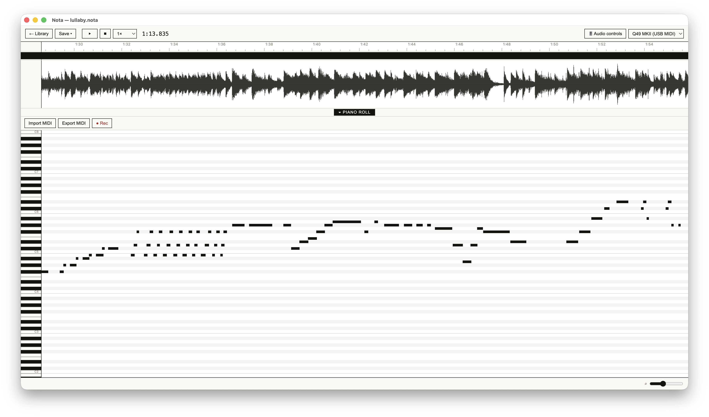

High quality time-stretching
Change playback speed without changing pitch. Powered by Rubber Band.
A pretty, simple, open-source, cross-platform application for musicians to transcribe music.

Change playback speed without changing pitch. Powered by Rubber Band.
Mark a section, play it back, and keep looping until it clicks.
Build notes directly in the piano roll alongside the waveform, export the MIDI of finished transcriptions.
Want to practice a solo with the drums and bass from a recording? Separate a song into its stems and listen to only the parts you want to hear.
Nota is desktop music transcription software for musicians who want to learn a recording by ear.
Yes. Nota lets you change playback speed without changing the pitch of a song, so difficult passages are easier to hear and play back.
Yes. Mark the phrase you want to study and loop it until you can hear the rhythm, harmony, and individual notes clearly.
To use stem separation, first load your audio file and save a new Nota project. Under "Audio controls", you will now have the ability to perform stem separation. Once completed you will be able to control the volume of each stem separately.
Separation runs entirely on your device with a native engine built from demucs-rs. The first separation downloads the model (84 MB); after that, how long a song takes depends mostly on your GPU.
Nota is available for macOS on Apple silicon and 64-bit Windows.